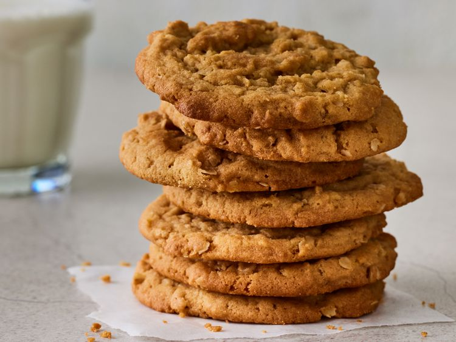

My Recipe
Introduction
I chose to make a peanut butter oatmeal cookies recipe because they are very simple and delicious. Peanut Butter Oatmeal Cookies are delicious cookies made from peanut butter, oatmeal, and other ingredients. The original recipe link is here.
Ingredients
- 1 cup peanut butter
- 1 cup packed brown sugar
- ¾ cup white sugar
- ½ cup shortening
- ½ cup margarine, softened
- 2 large eggs
- 1 ½ cups all-purpose flour
- 2 teaspoons baking soda
- 1 teaspoon salt
- 1 cup quick-cooking oats
Instructions
- Preheat the oven to 350 degrees F (175 degrees C).
- Beat peanut butter, brown sugar, white sugar, shortening, and margarine in a large bowl with an electric mixer on medium speed until smooth and creamy. Beat in eggs, one at a time, until well blended.
- Combine flour, baking soda, and salt in a separate bowl; stir into creamed mixture until incorporated. Mix in oats until just combined.
- Drop teaspoonfuls of dough onto ungreased cookie sheets.
- Bake cookies in the preheated oven until just lightly browned, 10 to 15 minutes. Do not overbake. Cool and store in an airtight container.
